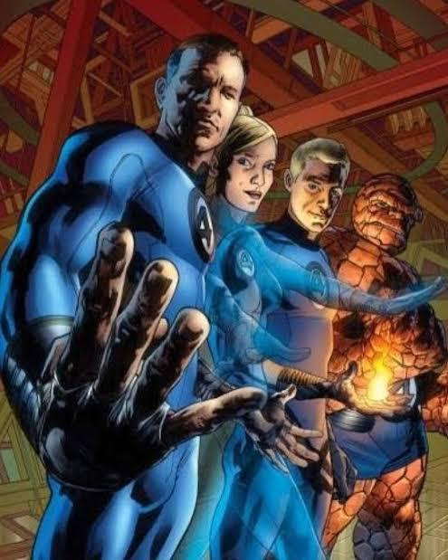

Welcome to the Fantastic 4 Fan Page

About the Fantastic 4
The Fantastic 4 are a team of superheroes who gained their powers after being exposed to cosmic rays during a scientific mission in space. The team consists of Reed Richards (Mr. Fantastic), Sue Storm (Invisible Woman), Johnny Storm (Human Torch), and Ben Grimm (The Thing).
Explore the individual pages to learn more about each member of the Fantastic 4 and their unique abilities!
History
The Fantastic 4 were created by Stan Lee and Jack Kirby and first appeared in the comic book "The Fantastic 4" #1 in November 1961. The team has been a staple of Marvel Comics ever since, with numerous storylines and adventures. They've also been features in numerous live action film adaptations.
The following table consists of all the films released that this team was featured in.
| Film Name | Director | Year |
|---|---|---|
| 20th Century Fox Films | ||
| Fantastic Four | Tim Story | 2005 |
| Fantastic Four: Rise of the Silver Surfer | Tim Story | 2007 |
| Fantastic Four | Josh Trank | 2015 |
| Marvel Studios Films | ||
| The Fantastic Four: First Steps | Matt Shakman | 2025 |